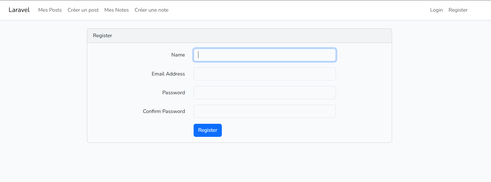
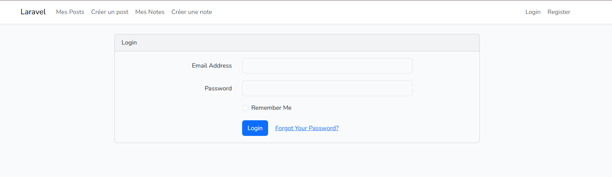
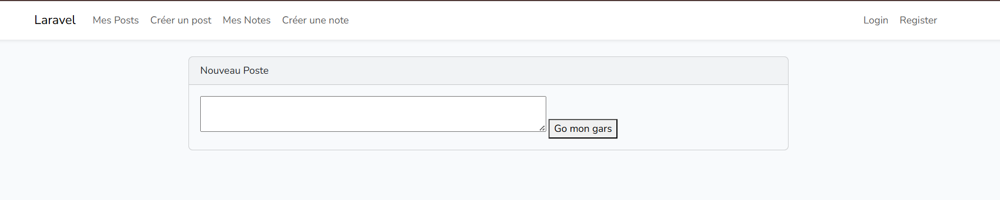
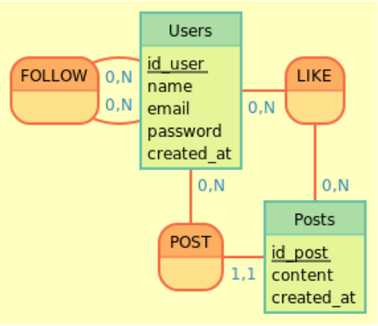

GALERIE

Logo

Écran d'inscription

Écran de connexion

Creation de posts

Modèle Conceptuel de Données
Ce projet a été réalisé dans le cadre de ma formation BTS SIO, avec pour objectif de concevoir un réseau social inspiré de X (ancien Twitter) en utilisant les technologies PHP et Laravel.
L’un des objectifs basiques du projet est de créer des comptes utilisateurs qui pourront interagir sur le réseau social.
Etant un réseau social, un des objectifs principaux du projet est de permettre aux utilisateurs de publier des messages et de les gerer (supprimer, modifier).
Creer un administrateur avec des droits étendus pour modérer les contenus et gérer les comptes utilisateurs.
📁 Niveaux d'utilisateurs :
Chaque utilisateur à l'inscription doit fournir :
| Choix | Justification |
|---|---|
| Framework | Développement de l’application avec le framework Laravel 12 (architecture MVC) |
| Acces | Mise en place d’un système d’authentification sécurisé (gestion des sessions et contrôle d’accès) |
| Données | Modélisation et création de la base de données relationnelle sous MySQL |
| Console | Développement des contrôleurs, routes et vues Blade |
| Règles métier strictes | Implémentation des opérations CRUD pour les publications |
Maîtrise des principes fondamentaux de la programmation orientée objet : encapsulation, héritage, polymorphisme et responsabilité des classes.
Traduction des besoins fonctionnels en règles métier strictes garantissant la cohérence et la fiabilité de l’application.
Mise en place d’exceptions personnalisées et de contrôles pour sécuriser les actions utilisateur et éviter les incohérences.
Structuration claire du code avec séparation des responsabilités pour un projet maintenable et évolutif.
Vérification systématique des entrées utilisateurs afin de garantir l’intégrité et la cohérence des données.
Structuration d’un projet professionnel avec logique, rigueur et respect des bonnes pratiques de développement.




Ce projet m’a permis de mettre en pratique des concepts fondamentaux du développement logiciel, tout en respectant des contraintes réalistes de gestion du personnel.
Il constitue une base solide pour une future évolution vers :